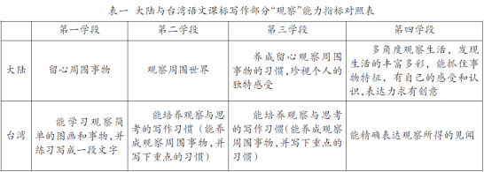
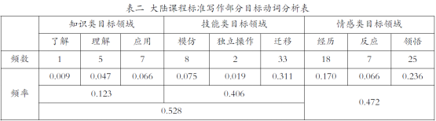

海峡两岸作文课程标准有何异同？

大陆的“观察”能力指标要求从“周围事物”到“周围世界”再到“养成习惯”，到第四学段则要求“能抓住事物特征，有自己的感受和认识，表达力求有创意”；大陆的“观察”能力指标要求从“简单的图画和事物”到“培养习惯”，到第四学段则要求“精确表达观察所得的见闻”。二者尽管有所区别，但是高度一致地体现了写作技能要求的递进性。
二、差异性：要求的具体化与教材、评价的不同取向
尽管两份课程标准有着诸多共同的追求和思路，但也存在许多差异。一方面由于两地有着不同的社会、政治、经济背景，另一方面也由于受到不同的教育思想影响，因而课程标准也呈现出各自的特色和侧重点。
1.能力要求：大陆重在“综合体现”，台湾突出“十大能力”。
大陆课程标准在“课程性质”中明确指出，“语文课程是一门学习语言文字运用的综合性、实践性课程”。这条性质定位更多地适用于写作教学。纵观大陆写作教学课程标准目标，从三维目标的要求，到课程标准模块的划分，再到具体学段条目的罗列，都充分体现着“综合性”。目标动词是大陆各科新课程标准表达中最为关注的概念，我们从写作课程标准中三维目标所用目标动词的角度进行考察，发现写作课程标准中最能体现“综合性”的“情感类目标领域”目标动词占了写作课程标准所有目标动词的47.2%，接近一半。具体见表二。

“综合性学习”模块的设置就充分体现了“综合性”。从具体的学段条目看，也体现着“综合性”，如第四学段写作目标第四条：“写作时考虑不同的目的和对象。根据表达的需要，围绕表达中心，选择恰当的表达方式。合理安排内容的先后和详略，条理清楚地表达自己的意思。运用联想和想象，丰富表达的内容。正确使用常用的标点符号。”看似一条，其实其中包括了四个方面的能力指标，分别是写作目的、表达方式、写作步骤和使用标点。
台湾的写作课程标准也有“综合”“统整”的要求，但是，它的“综合”“统整”有具体的要求，即上文提到的“十大写作能力”。在“十大写作能力”的观照下，课程标准对应地作出了相对具体的阐释：（1）应用语言文字，激发个人潜能，拓展学习空间；（2）培养语文创作之兴趣，并提升欣赏评析文学作品之能力；（3）具备语文学习的自学能力，奠定生涯规划与终身学习之基础；（4）运用语言文字表情达意，分享经验，沟通见解；（5）透过语文互动，因应环境，适当应对进退；（6）透过语文学习体认各种文化习俗；（7）运用语言文字研拟计划，并有效执行；（8）结合语文、科技与信息，提升学习效果，扩充学习领域；（9）培养探索语文的兴趣，并养成主动学习语文的态度；（10）运用语文独立思考，解决问题。
同样体现“综合”“统整”的要求，大陆重在“情感态度与价值观”上的宏观要求，台湾重在“十大写作能力”上的综合追求，这是两岸对写作目标要求的一大差异。
2.教材编写：大陆放开“自由安排”，台湾集束“三种方案”
教材编写指导要求也是课程标准一个重要项目。大陆课程标准中也没有专门提及写作教材的编写问题，所采取的态度是“自由安排”。课程标准修订人在解释时说：“作文教材的编写，发展缓慢，在相当长一段时间里几乎一片空白。” 写作教材的编写几乎是个历史性的问题。几千年传统的语文教材，借助“四书五经”，它们都只有阅读教材，没有专门的写作教材。20世纪初，虽然白话文进入了语文教材，但仍只有阅读教材而没有写作教材。30年代叶圣陶、夏�D尊合编的《国文百八课》可以说是写作教材编写的尝试。1942年，孙起孟、顾诗灵和蒋仲仁合编的《写作进修读本》对作文训练内容、步骤、方法及编排体系作了有益的探索。建国后，无论是统编教材还是新课改后各地方教材，基本上没有专门作文教材，也没有作文训练安排。1957年，人民教育出版社中学语文室草拟了《中学作文教学初步方案(草稿)》，但由于种种原因，方案当时没有公开发表。
鉴于历史现状，台湾也没有专门的统编写作教材。但是，在课程标准中专门谈及写作教材问题，提出了三个带有集束性的方案：
A.应配合单元教材及相关教材，并以学生生活经验为中心，引发学生写作之兴趣。联系写作基本练习(造词、造短语、造句、句子变化)，叙写技巧(扩写、缩写、续写、仿写)及写作步骤(审题、立意、选材、组织、修改、修辞等)配合习作、写作练习等，由浅入深，作通盘的规划安排，分派于各册各单元之中。
B.写作教材宜配合学生需要、季节时令、生活环境，以启发学生之创意，并设计不同题型，以供学生练习。
C.亦可视实际教学需要，单独编辑写作教学教材。
显然，关于写作教材编写的问题，大陆课程标准采用了“搁置”的策略，台湾课程标准采用了“方向”的策略。这也是两份课程标准的大不同。
3.教学评价：大陆倡导“质性评价”，台湾实行“量化评价”
评价问题也是课程标准的一个重要部分。大陆课程标准关于写作教学的评价有六条要求：（1）写作的评价，应按照不同学段的目标要求，综合考察学生写作水平的发展状况；（2）写作的评价，要重视学生的写作兴趣和习惯，鼓励表达真情实感，鼓励有创意的表达，引导学生热爱生活，亲近自然，关注社会；（3）写作材料准备过程的评价，不仅要具体考察学生占有材料的丰富性、真实性，也要考察他们获取材料的方法；（4）重视对作文修改的评价；（5）评价结果的呈现方式，根据实际需要，可以是书面的，可以是口头的；可以用等级表示，也可以用评语表示；还可以采用展示、交流等多种方式；（6）提倡学生在成长记录中收存有代表性的课内外作文和有价值的典型案例分析，以反映写作的实际情况和发展过程。这六条从整体来说，都是倡导“质性评价”，优点在角度多元，不足在难以操作。
台湾课程标准中关于写作评价的内容很少，只有一句话：“作文能力之评量原则，可依阶段能力指标，就创意、字句、取材、内容、结构、文法、修辞、标点等向度，自定义量表进行评量。”它没有像大陆课程标准中涉及方方面面，只强调三个关键词：“阶段能力指标”“向度”“量表”。但是，这恰恰是从写作能力根本出发的非常清晰的导向。尤其是“量表”，这是大陆不曾涉及甚至普遍回避抵触的词汇。海峡两岸对写作评价几乎截然相反的追求值得我们思考。
目前大陆执行的2011年版课程标准是在十年推广执行的基础上修订而成的。十年推广执行最大的问题是新课标缺乏“操作性”。教育部基础教育课程教材专家工作委员会在修订与审议工作说明中集中反映了这一问题。然而，2011年版语文课程标准写作部分依然缺少“操作性”。“操作性”是什么？大而言之，即课程目标的具体化、教材编写的集束性和评价手段的清晰度。台湾课程标准的这些特点不仅值得大陆课标制定者参考，也值得广大一线教师思考。
注：本文是全国中语会十二五重点课题“中学写作教学发展性评价体系的构建与运用”（课题批准号：0076）、江苏省教研室第九期课题“实施发展性评价，促进中学生写作能力提升的研究”（课题批准号：2011JK9-L235）、江苏省教科院“十二五”规划课题“基于SOLO理论的写作评价量表开发与运用研究”（课题批准号：B-b/2013/02/235）研究成果之一。
作者：江苏省常州高级中学 郭家海
编选自《语文月刊》2015年第4期《谈谈海峡两岸作文课程标准的异同》